05/01/2024 — Ba lần troponin độ nhạy cao bình thường trong 4 giờ với một “điện tâm đồ bình thường”
Bản dịch tiếng Việt của bài "Three normal high sensitivity troponins over 4 hours with a “normal ECG”" – Dr. Smith’s ECG Blog. Giữ nguyên toàn bộ 18 hình ảnh của bản gốc.
Tác giả: Willy Frick
Một người đàn ông 46 tuổi có tiền sử đái tháo đường típ 2 đến cơ sở chăm sóc khẩn cấp (urgent care) với than phiền “nóng rát ngực.” Hồ sơ không mô tả thêm chi tiết nào khác của bệnh sử. Điện tâm đồ sau đây được ghi.
Điện tâm đồ 1

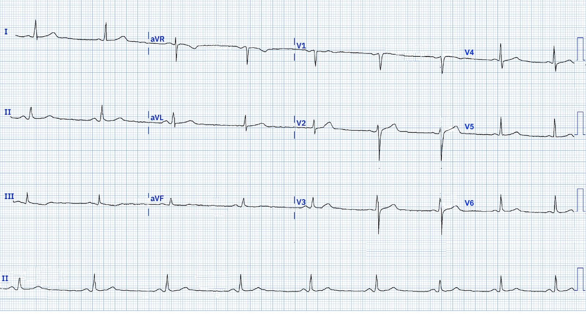
Điện tâm đồ cho thấy nhịp chậm xoang nhưng ngoài ra thì bình thường. Có sóng T đảo ngược (TWI) ở chuyển đạo III, nhưng điều này có thể gặp ở các điện tâm đồ bình thường. Không làm xét nghiệm nào. Bệnh nhân được kê đơn albuterol và được giới thiệu đến khám tim mạch.
Bình luận của Smith: Không bệnh nhân nào trên 25 tuổi bị nóng rát ngực không giải thích được lại nên được cho về khi chưa loại trừ bằng troponin, dù điện tâm đồ có bình thường đến đâu. Chẩn đoán “trào ngược” hay “GERD” không bao giờ đứng vững được nếu chưa loại trừ bằng troponin.
Trong ba ngày tiếp theo, anh vẫn có triệu chứng từng cơn và vì vậy đã quay lại khoa cấp cứu. Anh mô tả triệu chứng là nóng rát ngực, đôi khi lan lên họng và hàm. Anh nhận thấy nó lần đầu khi đang tập thể dục. Vào ngày đến viện, cơn đau làm anh thức giấc, đó là lý do anh quyết định đến khám. Điện tâm đồ sau đây được ghi vào khoảng nửa đêm. Kết quả đọc của máy là “Nhịp xoang bình thường, điện tâm đồ bình thường.”
Điện tâm đồ 2

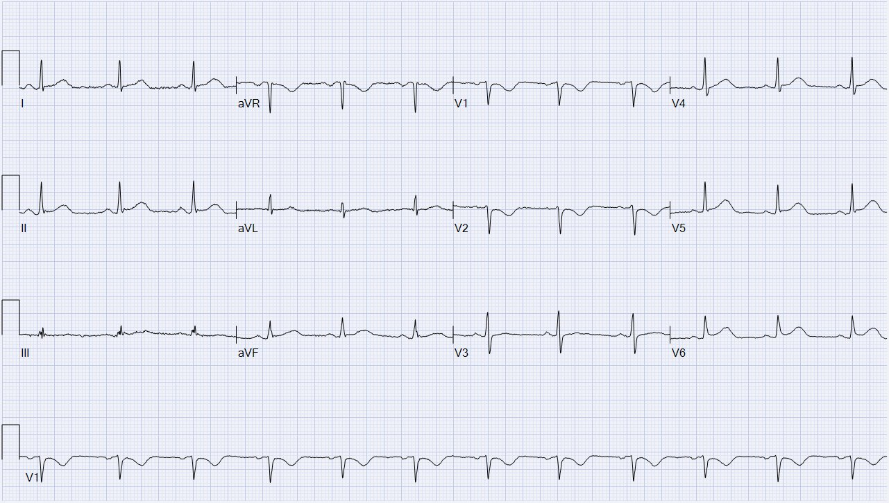
Bạn nghĩ gì?
Thuật toán: GE VU 360
Đây là kết quả đọc của Queen of Hearts cùng với phần giải thích (explainability) theo từng chuyển đạo.

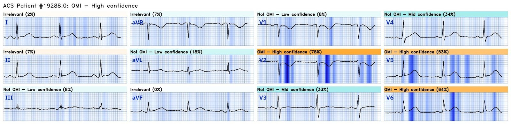
Cô ấy thấy OMI với độ tin cậy cao.
Tôi đã gửi điện tâm đồ này cho Dr. Smith mà không kèm bối cảnh lâm sàng nào, và ông nói “OMI sau-bên.” Cũng như Queen of Hearts, Dr. Smith khi đó không có điện tâm đồ trước đây của bệnh nhân. Dưới đây là một vài chuyển đạo được chọn, đặt cạnh nhau:

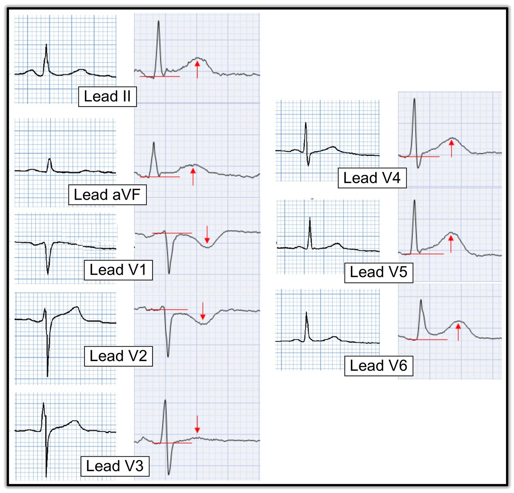
Chúng ta có thể nhận thấy những thay đổi sau:
- Tăng diện tích dưới đường cong của sóng T ở II và aVF cũng như V4-V6
- Sóng T mới trở nên đối xứng ở cùng các chuyển đạo đó so với bản ghi trước (vốn cho thấy sườn lên thoai thoải hơn và sườn xuống dốc đột ngột hơn)
- Thay đổi tương tự ở sóng T tại V1-2, nhưng đảo ngược (như dự kiến trong OMI thành sau)
- Sóng T dẹt ở V3
- ST chênh lên (STE) kín đáo ở II, aVF, V4-V6, không đạt tiêu chuẩn STEMI
- ST chênh xuống (STD) ở V1-2
- STD tương đối ở V3 (trước đây chênh lên nhẹ sinh lý, nay gần như đẳng điện)
Bác sĩ khám bệnh nhân ghi nhận “Loạn nhịp xoang với tần số thất 71 nhịp/phút. Các dấu hiệu khác: Không có ST chênh lên.” Họ cũng ghi nhận “Đau ngực tái hiện được khi ấn.” (Hãy nhớ rằng đau ngực tái hiện được khi ấn không nên khiến bạn yên tâm ở những bệnh nhân có xác suất tiền nghiệm OMI cao. Bệnh nhân của chúng ta đã có điện tâm đồ chẩn đoán OMI, nên dấu hiệu này vô ích.) Troponin I độ nhạy cao (hsTnI) lấy vào thời điểm đó là 9 ng/L (tham chiếu < 35 ng/L). hsTnI lặp lại 2 giờ sau là 13 ng/L, tăng nhẹ nhưng vẫn trong giới hạn bình thường.
Bình luận của Smith: đây là một người đàn ông tương đối trẻ, ngoài ra khỏe mạnh. Ít có khả năng, dù hoàn toàn không phải là không thể, anh có troponin ở mức phát hiện được. Hơn nữa, một thay đổi troponin ≥ 3 để lại khả năng đáng kể rằng các lần troponin sau sẽ tăng cao hơn. Đây là xét nghiệm troponin hs của Abbott và bạn chỉ có thể loại trừ nhồi máu cơ tim với giá trị tiên đoán âm (NPV) 99% nếu troponin đầu tiên, lấy ít nhất 3 giờ sau khởi phát đau, là ＜5 ng/L hoặc delta là < 3 ng/L.
Bệnh nhân được cho aspirin 324 mg và morphine 4 mg tĩnh mạch. (Morphine không điều trị thiếu máu cục bộ cơ tim nhưng lại che giấu nó!) Siêu âm tim tại giường được mô tả là có “chức năng tâm thu nhìn chung bình thường.” Do triệu chứng vẫn tiếp diễn, bệnh nhân được cho liều morphine thứ hai 4 mg tĩnh mạch. Điện tâm đồ ghi lại được trình bày dưới đây.
Điện tâm đồ 3

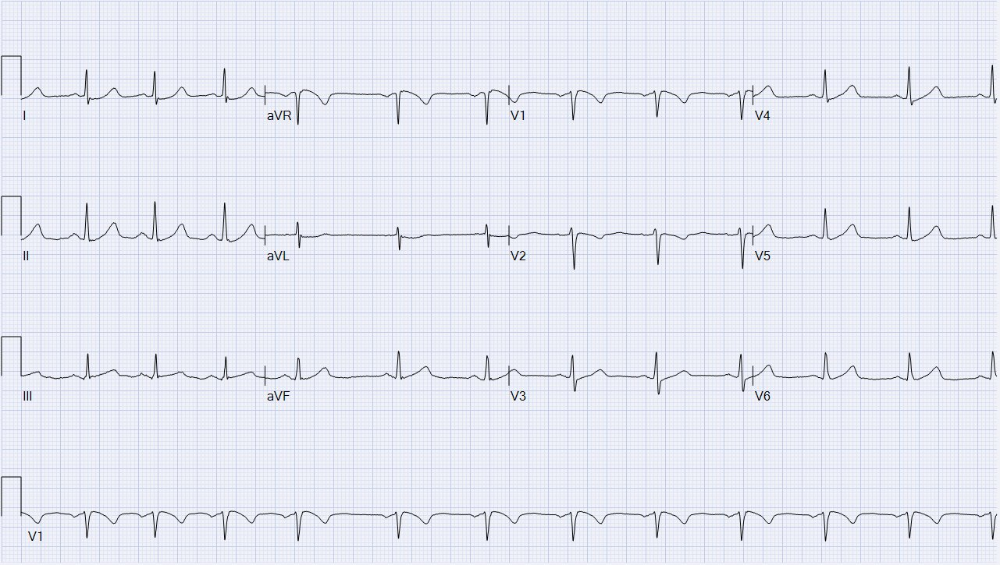
Giờ đây còn có thêm bằng chứng OMI, ở các chuyển đạo dưới và với STD soi gương ở aVL
Và đây là phân tích của Queen of Hearts:

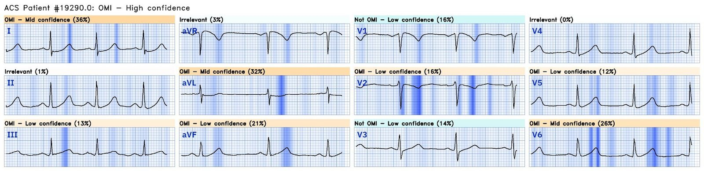
Hãy để ý rằng Queen thực sự nhận ra ST chênh xuống soi gương ở aVL
Không rõ triệu chứng của bệnh nhân lúc này so với lúc đến viện ra sao. So với điện tâm đồ 2, có STD mới ở I/aVL, soi gương với các thay đổi ở thành dưới. Tuy nhiên, sóng T kém đối xứng và kém đầy đặn hơn, gợi ý rằng chỗ tắc có thể đang tự tái tưới máu.
Một liều NTG 0.4 mg ngậm dưới lưỡi không giúp ích. Lần hsTnI thứ ba, 4 giờ sau lần đầu, là 26 ng/L, vẫn trong giới hạn bình thường. Bệnh nhân giờ đã có ba lần troponin độ nhạy cao trong vòng bốn giờ đều trong giới hạn bình thường.
Bình luận của Smith về các giá trị troponin này:
Tuy vậy, một thay đổi troponin ở mức độ này vượt xa cả biến thiên sinh học lẫn hệ số biến thiên. Xem đoạn bên dưới để bàn luận về hệ số biến thiên. Định nghĩa của một xét nghiệm troponin độ nhạy cao thực chất là độ chính xác cao: nó có thể đo được nồng độ ở ít nhất 50% người bình thường (nồng độ dưới mức tham chiếu bách phân vị thứ 99) với hệ số biến thiên không vượt quá 10% [người dịch: nguyên văn ghi “minimum coefficient of variation of 10%”] (độ chính xác cao) tại bách phân vị thứ 99.
Về biến thiên sinh học, mức tối đa là khoảng 80% từ ngày này sang ngày khác (ÍT HƠN NHIỀU từ giờ này sang giờ khác). Nói cách khác, nếu bạn đo troponin của một người vào một ngày, rồi vào ngày hôm sau, thì thay đổi lớn nhất không nên vượt quá 80%. Ở đây thay đổi đầu tiên là từ 9 lên 13. Mức này là quá lớn đối với biến thiên của phòng xét nghiệm. Nhưng chênh lệch này là có thể đối với biến thiên sinh học. Vì vậy nó không khẳng định mà cũng không loại trừ tổn thương cơ tim. Tuy nhiên, thay đổi thứ 2 là từ 13 lên 26 ng/L. Đây sẽ là thay đổi quá lớn ngay cả khi tính từ ngày này sang ngày khác (> 80%) và chắc chắn là quá lớn nếu tính từ giờ này sang giờ khác. Vì vậy ở đây có khả năng có tổn thương cơ tim (và vì nó xảy ra trong bối cảnh lâm sàng phù hợp, nên là nhồi máu cơ tim.) Tuy nhiên, Định nghĩa nhồi máu cơ tim đòi hỏi ít nhất một giá trị trên bách phân vị thứ 99, mà với nam giới là 34 ng/L (16 ng/L với nữ giới). Do đó, bệnh nhân (chưa) được chẩn đoán chính thức là nhồi máu cơ tim và phải được gọi là đau thắt ngực không ổn định trừ khi các lần troponin tiếp theo trả về trên bách phân vị thứ 99.
Người ta cũng phải tính đến hệ số biến thiên của xét nghiệm troponin. Đây là thước đo độ lặp lại của xét nghiệm trên CÙNG một mẫu. Nếu bạn đo hai lần, kết quả có giống nhau không? Với xét nghiệm này, hệ số đó RẤT thấp (rất tốt), 4% tại bách phân vị thứ 99 — 26 ng/L, nhưng sẽ không tốt như vậy ở mức 9 ng/L. Do đó, người ta coi một kết quả xét nghiệm chênh lệch từ 2 trở xuống là cùng một kết quả.
Do đó, các giá trị troponin này rất đáng lo ngại cho hội chứng vành cấp (ACS), và các lần tiếp theo có lẽ sẽ chẩn đoán được nhồi máu cơ tim cấp.
Cuối cùng, troponin tăng chậm hơn ở bệnh nhân có động mạch bị tắc kéo dài. Troponin bị giữ lại trong vùng cơ tim không được tưới máu. Người ta có thể thấy troponin tăng vọt sau PCI một chỗ tắc do troponin được giải phóng. Vì vậy, một bệnh nhân đau kéo dài với troponin thấp có thể đang có một nhồi máu cơ tim rất lớn!
Ca bệnh tiếp diễn
Khoa nội được gọi để nhập viện. Điện tâm đồ ghi lại vào khoảng 9 giờ sáng được trình bày dưới đây. Lúc này triệu chứng của anh đang cải thiện, nhưng điều đó không đặc biệt có giá trị vì anh đã nhận tổng cộng 8 mg morphine.
Điện tâm đồ 4

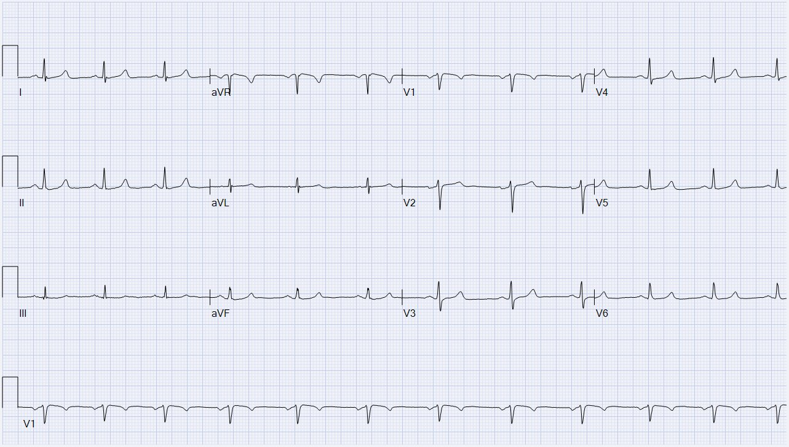
Cải thiện nhiều. Tái tưới máu.
Và phần giải thích của Queen of Hearts:

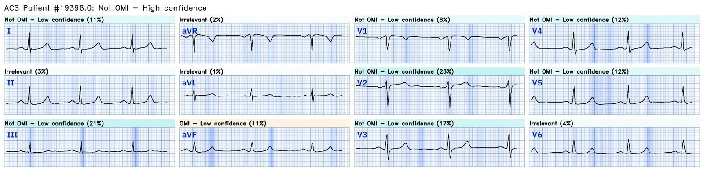
Cô ấy thấy không có OMI với độ tin cậy cao. Như một thí nghiệm tư duy ngắn, hãy hình dung bệnh nhân đã chờ vài giờ mới đến viện, và đây lại là điện tâm đồ đầu tiên! Nó có thể bị nhầm là bình thường, nhưng thực ra nó là giả bình thường. Thực tế, tất cả các sóng T đều dương hơn so với điện tâm đồ trước đây của anh tại cơ sở chăm sóc khẩn cấp. Hãy nhớ rằng bệnh nhân OMI có thể có điện tâm đồ bình thường! hsTnI lặp lại là 183 ng/L, tăng từ 26 ng/L.
Khoảng giữa trưa, khoa tim mạch được gọi để đánh giá. Điện tâm đồ ghi lại lúc đó được trình bày dưới đây. Bệnh nhân cho biết đau ngực của anh là 4/10, giảm từ 8/10 lúc đến viện.
Điện tâm đồ 5

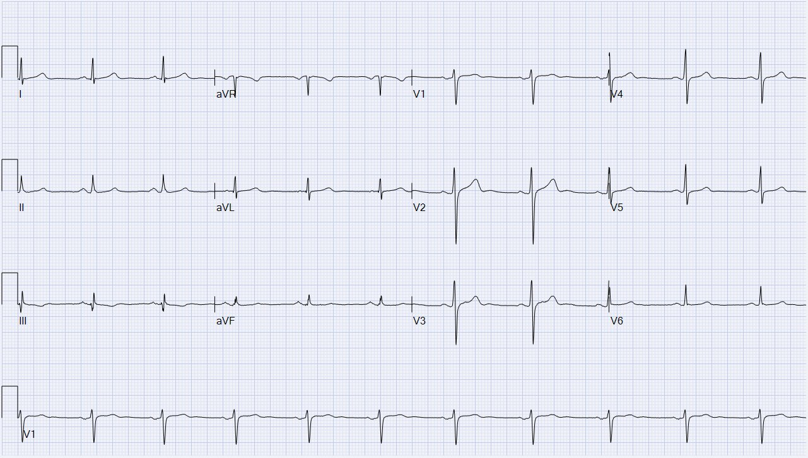
hsTnI lặp lại tăng lên 1417 ng/L. Lúc này, mặc dù điện tâm đồ trông bình thường, khoa tim mạch cho rằng đây là một OMI đang tái tưới máu. Do triệu chứng vẫn tiếp diễn, họ lên kế hoạch thông tim ngay lập tức. Không may, phòng thông tim (cath lab) đang bận với một ca can thiệp tim cấu trúc phức tạp, nên họ chọn điều trị tạm thời bằng tenecteplase. Anh cũng được bắt đầu truyền liên tục heparin và nitroglycerin, và được cho metoprolol tartrate 25 mg, captopril 12.5 mg và clopidogrel 300 mg.
Triệu chứng của bệnh nhân không hết. Vài giờ sau, anh chỉ mô tả triệu chứng cải thiện nhẹ, từ 4/10 xuống 3/10. Điện tâm đồ ghi lại được trình bày dưới đây.
Điện tâm đồ 6

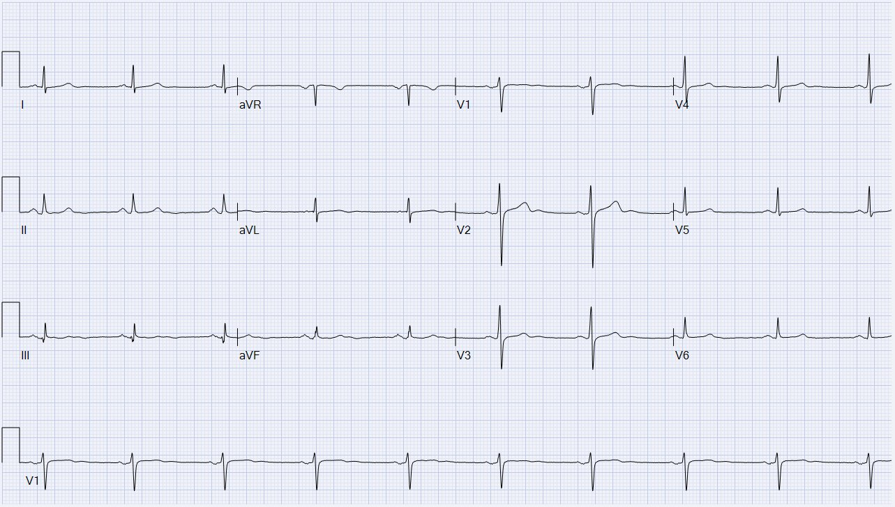
Về cơ bản nó không thay đổi so với bản ghi trước. Dựa trên cơn đau thắt ngực không hết, khoa tim mạch quyết định thực hiện PCI cứu vãn (rescue PCI). Phim chụp mạch vành của anh được trình bày dưới đây.
Đây là góc chếch trước trái – chếch đầu (“LAO crani”), tốt nhất để quan sát phần lớn hoặc toàn bộ RCA. Bạn có thể nhận ra LAO vì tim nằm phía trước hoặc bên trái cột sống.
Đây là một ảnh tĩnh có chú thích, cho thấy RCA chia đôi thành PDA (cho thấy hệ ưu thế phải) và nhánh sau-bên (gọi là “PL”). Có bệnh lan tỏa khắp RCA với một tổn thương khu trú nặng tại mũi tên đỏ. PDA có tắc gần hoàn toàn ở đoạn rất gần, sát chỗ chia đôi, được chỉ bởi mũi tên vàng hướng về giữa hình.

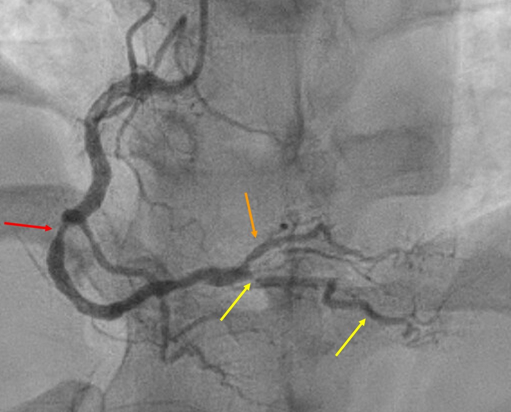
Đây là góc chếch trước phải – chếch chân (“RAO caudal”), tốt nhất để quan sát LCx và các nhánh của nó. Bạn có thể nhận ra RAO vì cột sống nằm ngoài màn hình về phía bên trái (và tim nằm bên phải cột sống).
Ở đây chúng ta thấy LAD, các nhánh chéo, LCx, và một nhánh bờ tù OM lớn. LCx có bệnh lan tỏa (rất gồ ghề, không trơn láng) nhưng không có tổn thương nặng. OM có tắc gần hoàn toàn, được chỉ bởi mũi tên tím. LAD đoạn gần có bệnh nhẹ, nhưng LAD đoạn xa và các nhánh chéo không được đánh giá tốt ở góc chụp này.

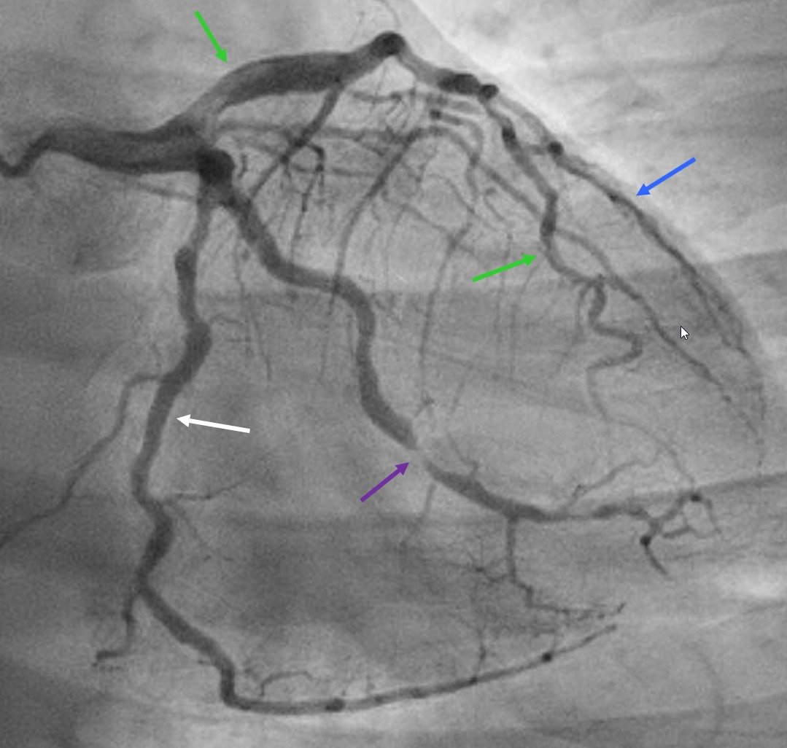
Cuối cùng, đây là góc chếch trước phải – chếch đầu (“RAO crani”), tốt nhất để quan sát phần lớn LAD. Một lần nữa, cột sống nằm ngoài màn hình về phía bên trái, và tim nằm bên phải cột sống.
Ở đây chúng ta thấy LAD, các nhánh chéo, và LCx đoạn xa. LAD có bệnh lan tỏa với vài vùng hẹp mức độ vừa nhưng không có tổn thương gây hạn chế dòng chảy. LCx đoạn xa được nhìn thấy, còn OM không được quan sát rõ ở đây.

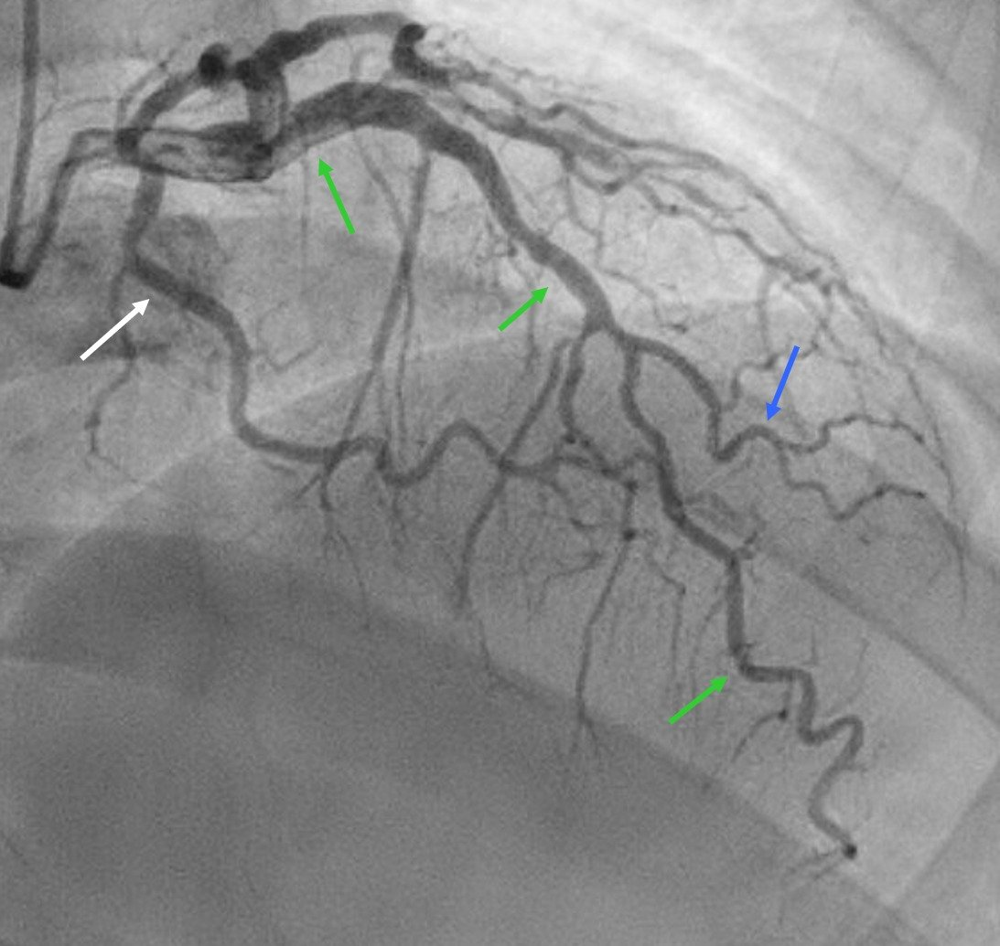
Từ chụp mạch vành, không rõ đâu là thủ phạm. Các thay đổi điện tâm đồ ở thành dưới, thành sau và thành bên. Dù về mặt thống kê là ít khả năng, vẫn có thể có nhiều chỗ nứt vỡ mảng xơ vữa. Trên siêu âm trong lòng mạch (IVUS), mảng xơ vữa ở RCA đoạn giữa được mô tả là “có miệng lõm, viêm và cồng kềnh,” và mảng xơ vữa ở OM được mô tả là “cồng kềnh với bằng chứng viêm và có lẽ loét.” Mảng xơ vữa ở PDA cũng cồng kềnh, nhưng không được mô tả là viêm hay loét.
Bằng chứng về can thiệp các mảng xơ vữa không phải thủ phạm còn chưa thống nhất và nằm ngoài phạm vi bài blog này. Heitner và cs. (DOI:10.1161/CIRCINTERVENTIONS.118.007305) đã cho thấy rằng ở những bệnh nhân đến viện với nhồi máu cơ tim không ST chênh lên (NSTEMI):
- Không xác định được động mạch liên quan đến nhồi máu ở 37% bệnh nhân
- Một động mạch sai bị xác định là thủ phạm ở 31% bệnh nhân
- Trong số bệnh nhân được PCI, 27% được tái thông mạch chỉ ở các động mạch không phải thủ phạm
Thử nghiệm FIRE gần đây của Biscaglia và cs. (tiến hành trên một quần thể bệnh nhân khác) cho thấy có lợi ích khi điều trị các tổn thương không phải thủ phạm (non-culprit lesion). Người ta tự hỏi liệu lợi ích này có thể một phần là nhờ tránh được việc vô tình bỏ sót thủ phạm hay không!
Dựa trên kết hợp chụp mạch vành và IVUS, bệnh nhân này được đặt stent ở RCA đoạn giữa, PDA đoạn gần và OM. Trong lúc ông ở trong phòng thông tim, hsTnI lặp lại tăng vọt từ 1417 ng/L lên trên giới hạn trên có thể định lượng 60,000 ng/L.
RCA và PDA trước và sau, mũi tên chỉ các vùng được đặt stent.

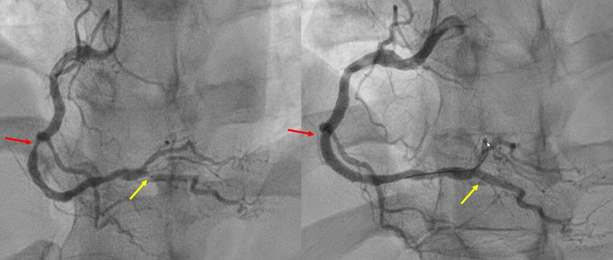
OM trước và sau, mũi tên chỉ vùng được đặt stent.

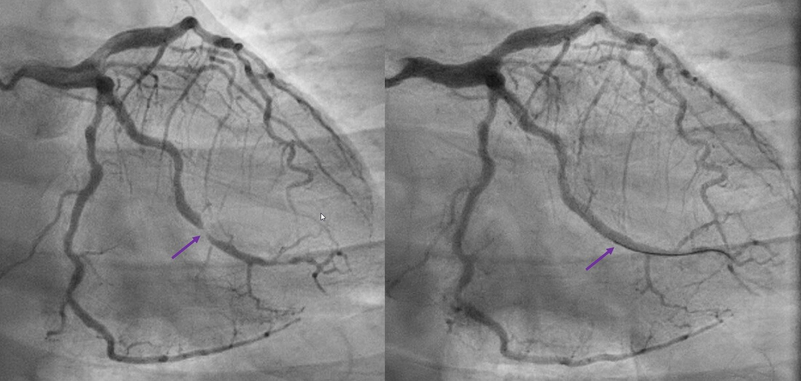
Nếu điện tâm đồ lúc nhập viện của ông được nhận ra và điều trị cấp cứu, troponin của ông thậm chí có thể đã vẫn nằm trong giới hạn bình thường. Một điện tâm đồ cuối cùng được ghi vào sáng hôm sau.
Điện tâm đồ 7

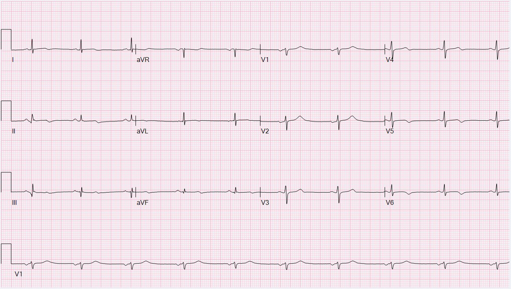
Và đây là phần giải thích (explainability) của Queen of Hearts:

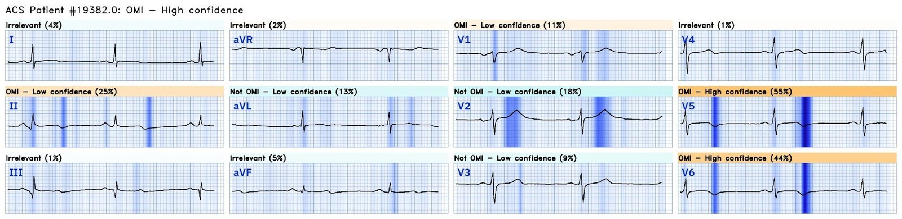
So với bản ghi trước, giờ đây chúng ta thấy:
- Sóng T hai pha do tái tưới máu ở II và aVF (và có lẽ nhẹ ở III)
- Sóng T hai pha hoặc đảo ngược do tái tưới máu ở V4-V6
- Sóng T dương quá mức do tái tưới máu ở V1-3 (soi gương với sóng T đảo ngược ở thành sau)
- Có lẽ thậm chí có sóng T tái tưới máu tinh tế ở I và aVL, ủng hộ vai trò của OM là (ít nhất) một đồng thủ phạm
Những điểm cần học:
- KHÔNG BAO GIỜ cho morphine ở bệnh nhân nghi hội chứng vành cấp (ACS), trừ khi bạn đang giảm triệu chứng trong lúc chờ thông tim cấp cứu. Đau thắt ngực kháng trị nội khoa cần được chụp mạch vành ngay, nhưng điều này chỉ xảy ra trong 6.4% trường hợp.
- Troponin có thể tăng rất chậm lúc đầu, nhưng điều này không nên khiến bạn yên tâm rằng bạn còn thời gian để lãng phí khi triệu chứng và điện tâm đồ gợi ý OMI.
- Bệnh nhân OMI có thể có điện tâm đồ bình thường.
- Chiến lược dược lý–can thiệp (tPA rồi thông tim) đôi khi là lựa chọn tốt nhất ngay cả tại một trung tâm có PCI nếu bệnh nhân không thể được chụp mạch vành kịp thời.
- Các dấu hiệu tái tưới máu có thể không biểu hiện rõ ràng và ngay lập tức. Đôi khi có thể mất 12 hoặc 24 giờ mới thấy bằng chứng tái tưới máu trên điện tâm đồ.

===================================
BÌNH LUẬN CỦA TÔI, bởi KEN GRAUER, MD (5/1/2024):
===================================
Bàn luận tuyệt vời và kỹ lưỡng của Dr. Frick về ca hôm nay! Vì vậy tôi quyết định hướng bình luận của mình thành một lời than phiền của người viết. Trong Dr. Smith’s ECG Blog, chúng tôi đã nhiều lần nhấn mạnh mặt trái của việc dùng morphine bừa bãi ở những bệnh nhân đến khám vì đau ngực do thiếu máu cục bộ mới xuất hiện (CP – Chest Pain). Phấn đấu sử dụng hợp lý loại thuốc giảm đau vô giá, đã qua thử thách của thời gian này lẽ ra phải là một mục tiêu DỄ đạt được. Các sự thật cơ bản như sau:
- Morphine có hiệu quả. Thuốc dễ chỉnh liều. Thuốc có hiệu quả làm giảm triệu chứng. Và, thuốc thực sự mang lại lợi ích sinh lý cho bệnh nhân có biến cố tim cấp (tức là, thuốc giúp giảm lo âu cũng như giảm đau — điều này có thể làm giảm hoạt hóa hệ thần kinh tự chủ — thường dẫn đến giảm tần số tim, huyết áp, lượng máu tĩnh mạch trở về và nhu cầu oxy cơ tim — Murphy và cs.: StatPearls, 2023). Và, trong số những mục tiêu hàng đầu của chúng ta với tư cách người cung cấp dịch vụ y tế — chúng ta muốn điều trị cơn đau khi việc này có thể thực hiện an toàn!
- Dù đã nói như trên — Rõ ràng không nên cho morphine cho đến khi đã quyết định tiến hành nhanh thông tim chẩn đoán và điều trị. Lý do là việc giảm đau ngực ở những bệnh nhân này dẫn đến trì hoãn thông tim (vì nó loại bỏ một trong những chỉ định chính của thông tim sớm).
- Nhưng chỉ riêng việc bệnh nhân của chúng ta đến khám vì đau ngực nặng, mới xuất hiện, nghe giống nguồn gốc tim và kéo dài dai dẳng — đã tự bản thân nó, là chỉ định rõ ràng cho thông tim chẩn đoán (và có thể điều trị) sớm.
- Chúng ta biết rằng ngay cả troponin độ nhạy cao cũng có thể không vượt quá ngưỡng “bình thường” trong nhiều giờ ở một số bệnh nhân bị tắc mạch vành cấp. Vì vậy, lập luận rằng nên trì hoãn morphine vì đang chờ “cho đến khi” troponin trở nên dương tính là sai lầm.
- Chúng ta cũng biết rằng (các) điện tâm đồ ban đầu có thể không có giá trị chẩn đoán dù có một biến cố mới xảy ra (tức là, NẾU một chỗ tắc cấp tự mở ra chỉ sau một khoảng thời gian ngắn — hoặc nếu điện tâm đồ ban đầu được ghi trong giai đoạn “giả bình thường hóa”).
- Vậy — NẾU đau ngực mới xuất hiện, nghe giống nguồn gốc tim, kháng trị nội khoa là một chỉ định được khuyến cáo cho thông tim sớm, ngay cả khi (các) điện tâm đồ và (các) troponin ban đầu bình thường — Tại sao các bác sĩ can thiệp và những người cung cấp dịch vụ y tế tuyến đầu khác lại phạm lỗi kép là — i) Không thực hiện can thiệp chẩn đoán (và điều trị) MẤU CHỐT là thông tim sớm ở những bệnh nhân này, điều mà các hướng dẫn chỉ rõ là được khuyến cáo? — và, ii) Để bệnh nhân của họ tiếp tục đau ngực nặng mà morphine lẽ ra có thể làm giảm?
- “ĐIỀU CỐT LÕI” Nên Là Gì: Những người cung cấp dịch vụ y tế cần hiểu rằng đau ngực do thiếu máu cục bộ kéo dài là một trong những chỉ định được khuyến cáo cho thông tim sớm. Trì hoãn thông tim sớm một khi chỉ định này đã được thỏa mãn không đem lại lợi ích gì — và có nguy cơ mất đi cơ tim còn sống. Một động lực nữa để nhanh chóng đi đến quyết định thông tim sớm — là khi đó bạn có thể điều trị đau ngực cho bệnh nhân bằng lượng morphine nhiều tới mức cần thiết, đồng thời cứu được một lượng đáng kể cơ tim nhờ PCI sớm khi thông tim xác nhận OMI.